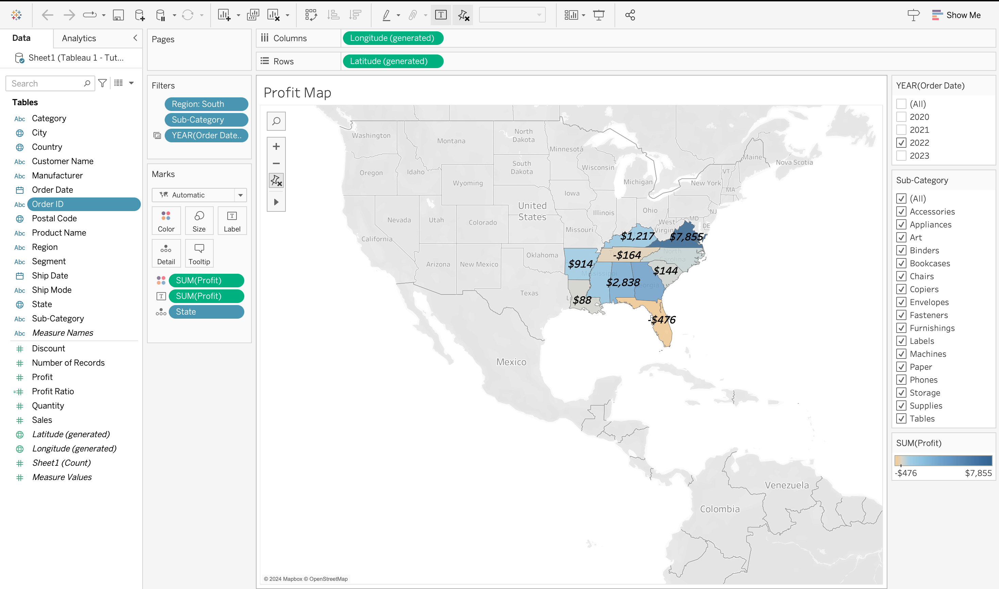
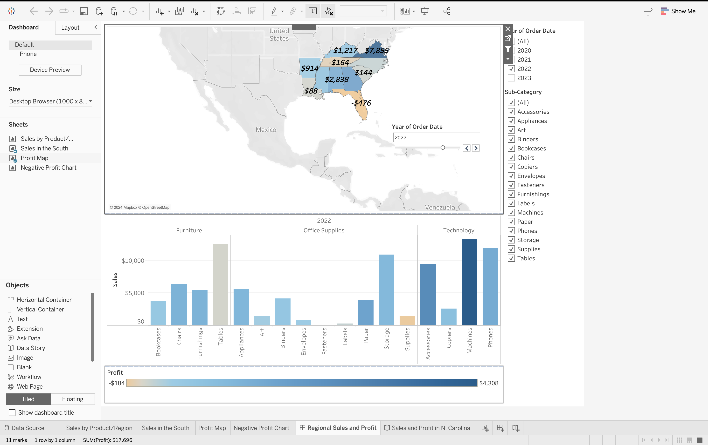

This project was an introduction to Tableau visualization software. There was a data source provided to the students to use in this project. There was eight steps in this project. The first step was to begin the project. Step 1 included the importation of the data source and the creation of a calculation field.
The second step was the analysis of the data source. This analysis was done by comparing the sales by product and their region. This is done in the slide's titled "Sales by Product/Region" and "Sales in the South" through a bar graph. This was done through categorizing the rows and columns. The usage of colors and filters are used in these portions of the project.
A map was also made in this project. The tableau tools of colors, labels, and details. This was displayed in the Profit map. The Negative Profit Chart is a bar graph that is categorized by the profits in the columns and the state, city, and sub-category in the rows. The Negative profit Chart was separated by the filters: region south, year, city, state, and exclusions.
A dashboard was created in this project, and it was titled "Regional Sales and Profit". This dashboard demonstrated the Sales in the South and Profit Map. This is an interactive dashboard that displayed various information upon clicking on different information. The last part of this project is a story that displays all the visualization with a caption with a detail about each visualization. The last story uses the filter of 2023 only.


I learned many things in this project. I learned about Tableau and how to make different visualizations to analysis data. I learned how to implement filters, colors, labels etc to my Tableau visualizations. I learned how to to make a map, dashboard, and a story in Tableau. All these features emphasizes and symbolizes the analysis in Tableau.
Link back to the portfolio page